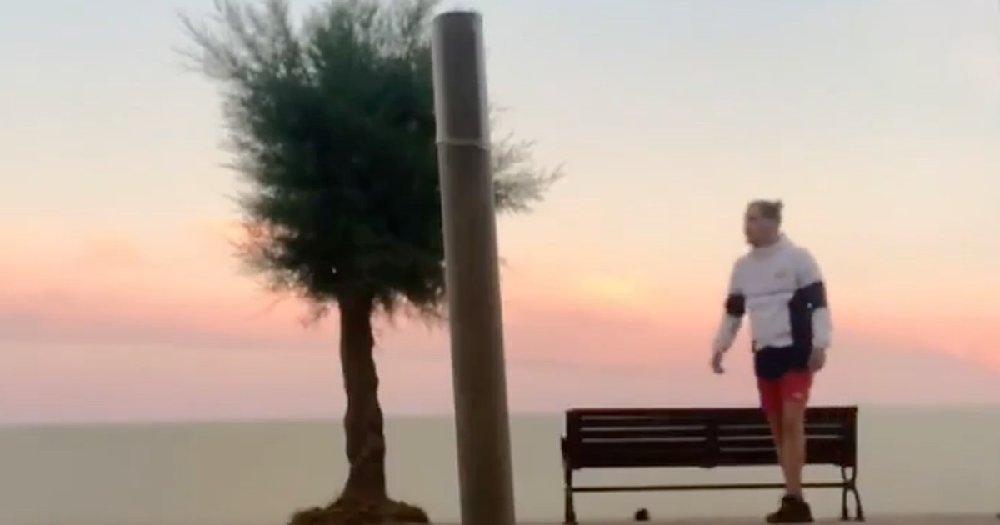

Craft standout posts in minutes
Lusty Owl Studio helps you compose polished, eye-catching link cards for X — fast and private.
Shop now
Lusty Owl Studio helps you compose polished, eye-catching link cards for X — fast and private.
Shop now